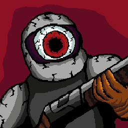

Unternehmhen
COSMICDEV ist ein österreichisches Spielentwicklungs-startup, spezialisiert auf high-intensity Spiele welche in GODOT hergestellt werden.
Unsere Marken
Konflikte mit bestehenden Marken wurdgen geprüft via EUIPO eSearch und TMview
1. Wortmarke
COSMICDEV
Reine Wortmarke: "COSMICDEV", meistens groß geschrieben. Verwendet als Identifizierung, Credits, etc.
Nizza Klasse 9: Computer-spiele
2. Bildmarke

Reine Bildmarke: Besteht aus einem closeup von einem Character aus "Cosmic Call". Wird meistens als Kombination mit der Wortmarke verwendet.
Nizza Klasse 42: Software Entwicklung
3. Farbmarke
"Deep Nebula Purple" und "Deep Red." Wird konsistent in allen Markenzeichen verwendet.
Nizza Klasse 41: Unterhaltung
Barrierefreiheit
Wir sind bemüht, unsere Website im Einklang mit dem Bundesgesetz über den barrierefreien Zugang zu Websites und mobilen Anwendungen des Bundes (Web-Zugänglichkeits-Gesetz – WZG) BGBl. I. Nr. 59/2019 idgF, barrierefrei zugänglich zu machen.
Diese Website ist konform mit WCAG 2.2 Konformitätsstufe AA.
- Semantisches HTML5
- Alt-texte für Medien
- Farbkontrastverhältnis > 4,5:1
- Tastaturnavigation
- Sprache im HTML-Tag (lang="de-AT")
- Responsive Design